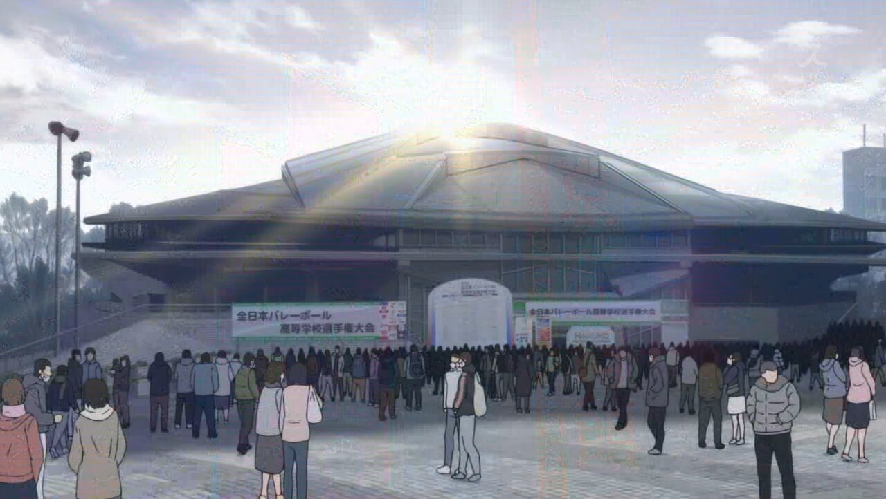

Cerita

Haikyuu menceritakan seorang anak bernama Hinata Shoyo. Hinata memiliki ketertarikan dengan bola voli ketika melihat pertandingan SMA tingkat nasional di televisi sebuah toko. Hinata mengidolakan seorang ace karasuno yang memiliki julukan "little giant". Pemain karasuno tersebut memiliki tubuh yang pendek namun lompatannya sangat tinggi untuk menghancurkan block lawan.
Hinata shoyo terus berlatih voli dan memulai pertandingan voli pertamanya saat SMP. Di pertandingan pertamanya, Hinata bertemu dengan seorang setter yang sangat jago bernama Kageyama Tobio. Tim hinata kalah telak melwan SMP Kageyama, pertandingan inipun menjadi pertandingan pertama dan terakhir di SMP bagi Hinata. Hinata yang sedihpun bertekad untuk berlatih lebih keras dan masuk ke SMA yang memiliki sejarah klub voli yang hebat, yaitu Karasuno
Di karasuno, Hinata kembali bertemu dengan kageyama. Awalnya mereka saling membenci, namun pelatih melihat kemampuan yang dimiliki Hinata dan Kageyama. Hinata memiliki kecepatan dan lompatan yang tinggi, sedangkan kageyama memiliki umpan yang sangat tepat dan cepat meskipun Ia sedikit egois seperti seorang raja. Berkat kerja keras akhirnya Hinata dan Kageyama menjadi duo mematikan dari karasuno yang memiliki serangan minus-tempo. Hinata dan Kageyama berhasil memberikan harapan bagi tim voli SMA Karasuno yang sudah bertahun-tahun tidak pernah lolos ke tahap nasional sejak "little giant".
Rival Team
Tim karasuno dari prefektur Miyagi memiliki lawan bebuyutan yaitu SMA Nekoma dari prefektur Tokyo Metropolis. Baik Karasuno dan Nekoma memiliki sejarah persaingan yang kuat. Sejarah mereka dimulai dari persaingan antara pelatih nekoma dan pelatih karasuno saat mereka berdua masih SMP. Pelatih nekoma yang bernama Nekomata Yasufumi sering berhadapan dengan pelatih Krasuno yaitu Ikkei Ukkai dalam pertandingan voli pada tahun kedua di SMP. Nekomata selalu berhasil membaca pergerakan Ukkai yang menurutnya mudah sekali ditebak. Ukkai berjanji akan mengalahkan Nekomata namun janji itu tidak pernah terwujud karena Ia selalu kalah. Pada saat mereka di tahun kedua SMA, tim voli Nekomata dan Ukkai lolos ke tingkat nasional, namun tim mereka sudah tereliminasi oleh tim lain sebelum mereka bertemu.
Turnamen
Tingkat Prefektur
Karasuno sempat melakukan sparring dengan Aoba Johsai sebelum melakukan pertandingan tingkat prefektur Miyagi. Saat itu karasuno berhasil menang dalam petandingan sparring karena Aoba Johsai baru mengeluarkan setter andalannya yaitu Oikawa di menit akhir. Oikawa adalah kakak kelas dari Kageyama saat mereka masih SMP. Oikawa sangat terkenal di televisi karena kehebatannya.
Pada saat pertandingan prefektur Miyagi, karasuno kembali bertemu dengan Aoba Johsai namun karasuno harus kalah dengan skor yang sangat tipis. Ini membuat tim Karasuno sempat mengalami keterpurukan, namun mereka lanjut berlatih untuk mengikuti pertandingan voli berikutnya yang apabila menang, maka tim karasuno akan melaju ke tingkat nasional mewakili prefektur Miyagi
Pada pertandingan tingkat prefektur Miayagi yang kedua, karasuno berhasil mengalahkan Aoba Johsai dan menuju ke babak final. Di babak final, karasuno berhadapan dengan tim dari SMA Shiratorizawa yang selalu mengalahkan Aoba Johsai dan mewakili prefektur Miyagi dalam pertandingan tingkat nasional. Singkat cerita, Karasuno berhasil mengalahkan Shiratorizawa dan akan menjadi satu-satunya perwakilan prefektur Miyagi ke tingkat nasional
Tingkat Nasional

Pada pertandingan tingkat nasional, semua perwakilan tim dari masing-masing prefektur seperti Miyagi, Tokyo Metropolis, Nagano, Saitama, dan masih banyak lagi akan bertanding.